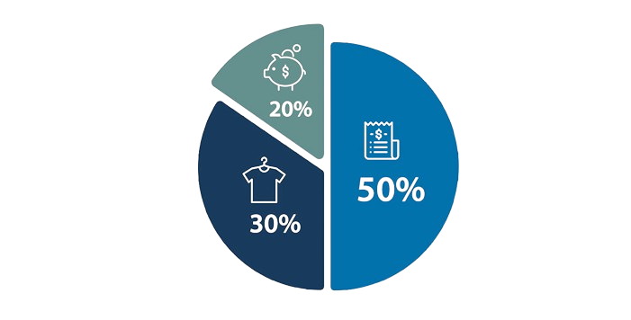

Finanțelor Actuale
Venituri: Notează toate sursele de bani (salarii, bonusuri, etc.).
Cheltuieli: Listează toate cheltuielile lunare (chirie, mâncare, transport). Crearea Bugetului
Categorii: Împarte cheltuielile în categorii (necesare, opționale, economii).
Limite: Stabilește sume pentru fiecare categorie. Asigură-te că veniturile sunt mai mari decât cheltuielile.
Urmărirea Cheltuielilor
Monitorizare: Folosește un jurnal, o aplicație de bugetare sau foi de calcul pentru a înregistra cheltuielile.
Revizuire: Verifică bugetul lunar și ajustează-l după nevoie.
Economisire
Fond de Urgență: Economisește pentru situații neprevăzute (3-6 luni de cheltuieli esențiale).
Reduceri: Identifică și taie cheltuielile neesențiale.
Automatizare: Setează transferuri automate în conturile de economii.
Planificarea Obiectivelor
Obiective: Stabilește scopuri financiare (vacanță, casă, pensie).
Strategii: Economisește lunar pentru a atinge aceste obiective.
Planificarea Obiectivelor
Obiective: Stabilește scopuri financiare (vacanță, casă, pensie).
Strategii: Economisește lunar pentru a atinge aceste obiective.
Revizuirea Bugetului
Evaluări: Verifică și ajustează bugetul lunar sau trimestrial.
Îmbunătățiri: Învață din experiență și ajustează strategiile pentru a economisi mai bine.
Regula 50/30/20: Alocă 50% pentru necesități, 30% pentru cheltuieli opționale, 20% pentru economii.
Metoda Plicurilor: Alocă bani în plicuri pentru fiecare categorie de cheltuieli.
